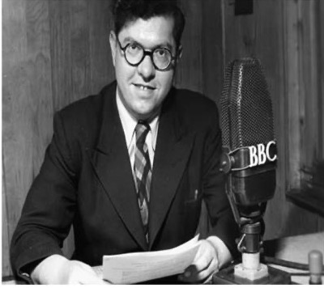

The Big Bang – Was it real? – Special Report.
IT WAS 1949, JUST AFTER THE END OF THE 2ND WORLD WAR, and people across Europe were still coming to terms with the immense loss of life and the devastation of towns and communities. That day in a London on April 7, 1949 a BBC interviewer spoke with physicist Fred Hoyle about theories of the universe’s creation, including the Steady State Theory he strongly supported. During the discussion, Hoyle casually remarked that the idea of a sudden universe beginning was “like a big bang.” The phrase caught on and has been used ever since to describe the origin of the universe.

AT THIS TIME NO PHYSICAL EVIDENCE WAS AVAILABLE to prove the universe had a sudden and violent beginning and as such, Hoyle was comfortable with the theory that the universe was infinite with no beginning and no end - but acknowledging that the universe was expanding. In a nutshell this theory supported by many including Albert Einstein, became the then cornerstone scientific theory of the day.
(LEFT) HOYLE AT THE MICROPHONE BEING INTERVIEWED. Surprisingly in years to come, Hoyle dug his heals in, even when the cosmic microwave background radiation was confirmed in 1964 US - debunking the Steady State Theory as obsolete.
FRED HOYLE FOOLISHLY CONTINUED TO SUPPORT THE STEADY-STATE THEORY primarily due to his philosophical preference for an eternal, naturalistic universe and his strong aversion to a "creation event" implied by his Big Bang. Hoyle as a committed atheist, believed in an unchanging universe that obeyed the "Perfect Cosmological Principle," where matter is continuously created rather than stemming from a singular beginning as described by Alexander Friedmann and Georges Lemaître in 1929.
THE QUESTION BACK THEN AND OF LATE IS: was the Big Bang real and did it happen? It is a bit like saying they didn’t walk on the moon or the Pope is the devel incarnate. Today, it is said that the creation theory in science and its research data is the most published data of all science. The main evidence and concrete proof fall upon the discovery by Penzias and Wilson Bell Labs, serendipity discovering the cosmic microwave background radiation (CMBR) or better described as the primordial footprint. Two Noble prizes came out to this very discovery in 1978.
THIS DISCOVERY SET IN MOTION AN EXTENSIVE NASA PROGRAM involving not just one, but three NASA satellites launched from 1989 to 2009. These missions captured remarkable images of the early light of our young universe, dating back about 380,000 years after the Big Bang. Their findings confirmed that time itself had a beginning and established the universe’s age at approximately 13.792 billion years. They also provided precise measurements of the universe’s expansion, with space telescope observations determining a Hubble Constant of roughly 70–76 kilometers per second per megaparsec.
FOLLOWING THESE EXTENSIVE SCIENTIFIC FINDINGS, space research entered a new phase of exploration and discovery. Scientists began to investigate the rate of cosmic inflation, questioning whether the universe expanded rapidly in its earliest moments or continued at a more constant pace over time This line of inquiry also led to deeper questions about what initially drove this expansion. Alongside these investigations came major breakthroughs, including the discovery of dark matter in 1933 by Fritz Zwicky, and later the discovery of dark energy in 1998 by Adam Riess, Saul Perlmutter, and Brian Schmidt.
WE SHOULD NEVER FORGET that the universe is real and that it had a momentous beginning. There is little doubt about these facts, and we know that the space between galaxies continues to expand at a rapid rate. What remains uncertain however, is what came before or was there a before? Was there a universe prior to our own? Did our universe originate from something smaller than an atom? Or is it part of a larger, cyclic process in which multiple universes form an ongoing sequence—a kind of multiverse?
THERE IS STILL MUCH WE DO NOT UNDERSTAND. I encourage anyone interested in cosmology to remain objective and not be led astray by theories that lack strong evidence or fail under careful scrutiny. As pointed out in this paper, the evidence is strong and, in many cases, overwhelming. Alternatively, when it comes to understanding the origins of the universe, quantum physics provides valuable insights for us to consider and helps fill many of the gaps in our knowledge. However, it also presents significant challenges and complexities—enough to confuse even the most experienced researchers.
Please persist on your journey of discovery and never give up – warm regards Eden.